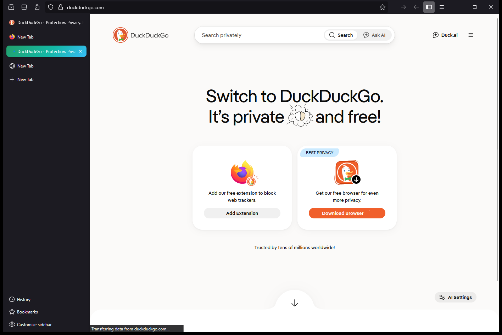

DuckDuckGo par défaut
Aucun autre moteur de recherche. Suggestions désactivées. Vous cherchez, personne ne profile.
Navigateur ultra-sécurisé, léger et
respectueux de la vie privée.
DuckDuckGo par défaut. Navigation privée. Zéro télémétrie.
Chaque réglage est durci par défaut. Rien à configurer, rien à croire sur parole.
Aucun autre moteur de recherche. Suggestions désactivées. Vous cherchez, personne ne profile.
Le navigateur s'ouvre en fenêtre privée. Aucune trace, aucun cookie persistant.
Cache 100 % en mémoire et effacement immédiat des données en un clic.
HTTPS obligatoire et DNS-over-HTTPS strict : le trafic ne sort jamais en clair.
Protection contre le pistage et les empreintes numériques, permissions refusées par défaut.
Télémétrie, Pocket, contenus sponsorisés et extraits désactivés. L'essentiel, rien de plus.
Onglets verticaux, interface épurée et lisible, dégradé signature vert → cyan.
Code auditable, sous licence MPL-2.0. Pas de boîte noire, pas de collecte.

Version portable : aucune installation requise.